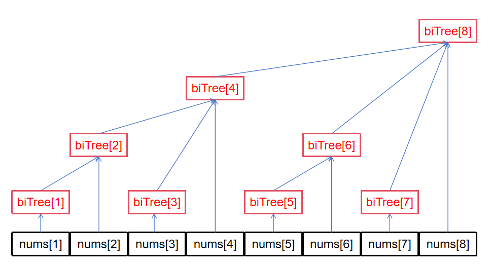

树状数组，也称作二叉索引树(Binary Indexed Tree)或 Fenwick 树。 它可以在 \(O(\log n)\) 的时间复杂度下实现单点修改与区间查询两个操作。
参考自 OI wiki。
无特殊说明，本文所有数组下标均从 1 开始。
前缀和
初学者最先接触到的支持区间查询的数据结构就是前缀和数组了，对于原始数组
nums 而言，对应的前缀和数组 prefixSum
满足：
\[ \text{prefixSum}[i] = \sum\limits_{j=1}^{i}\text{nums}[j] \]
区间查询
如果想求区间 nums[a:b] 之和，只需简单的进行
prefixSum[b]-prefixSum[a-1] 即可。对于一个已经构建好的
prefixSum 而言，其区间查询时间复杂度为
\(O(1)\)。
单点修改
然而，prefixSum
的单点修改却不如人意，如果修改了
nums[i]，需要将 prefixSum 中区间
[i:n] 的所有值均修改一遍，这样子时间复杂度为 \(O(n)\)。
现实场景下的操作往往是动态的，特别是某些数据库中需要进行大量的写操作。如果该写频繁数据库中维护区间和采用的是前缀和的做法，那么它一定活不过压测😒。
思考
根据上文可知，写是前缀和的根本劣势，一旦写操作极度频繁，对于海量数据而言，时间开销将会非常大。究其原因，还是在于
prefixSum
中的每个元素都出现了冲突的管辖范围，负载并不均衡，最极端的，第一个元素
nums[1] 几乎被所有的 prefixSum[i]
计算了一遍，而最后一个元素 nums[n]
却仅仅参与了一次计算。
如果能将这一冗余计算进行减负，说不定能提高一点性能？
树状数组
树状数组的本质思想在于分治，即将原始数组不断划分为等长的区间
nums[1 : n/2] 与 nums[n/2+1 : n]，分别由
biTree[n/2] 与 biTree[n]
去管辖这两个区间。这样一来，每个子区间中进行的写并不会给其他区间增加负载，而求前缀和只需将多个区间和相加即可。
「既然最后整个区间和就是
biTree[n/2] + biTree[n]，那不如让 biTree[n]
干脆管整个区间好了！」
于是，整个区间的管辖级别就浮现出来了，以 n=8 为例：

由于这种管辖级别像树一样，所以就叫树状数组了，而每个树状数组中的元素对应着的就是其管辖区间内原数组的所有元素之和。
区间查询
先来看看树状数组的读性能如何。对于原始数组
nums，为了求 sum(i)（即 nums[1:i]
之和），则要考虑怎么取树状数组中的区间。
以 sum(6) 为例，根据上图，我们很容易能得到最后的结果是
biTree[6] + biTree[4]；同样的，sum(7) 对应
biTree[7] + biTree[6] + biTree[4]；……
如果仅考虑上图，不难发现 sum(i) 其实就是以
biTree[i]
为起点，一直往左上方遍历求和即可（biTree[6] 的左上方只有
biTree[4]）。那么问题就转化为：如何遍历到下一个，也就是左上方的树状数组元素？
这里就有一个 trick：只需要将 i 对应二进制最后一个
1 移除，就能得到下一个要遍历的元素下标，直到 i
返回到 0；
lowbit(x)
lowbit(x) 是一种用于快速找出数 x
对应二进制最后一个 1 的位置的方法，其表达式为：
\[ \text{lowbit}(x) = x\ \&\ (-x) \]
以 10 为例，其二进制为 01010，而
-10 的二进制为
10110，两者进行按位与运算后所得结果为
00010，也就是 10 的最后一个
1。
毕竟补码是取反码然后 +1，对于
...100...000而言，其反码为...011...111，再加一得到...100...000，而高位全部取反，那么进行按位与后只有最后一个1会剩下。
结论
根据上面的理论，只要不断把最后一个 1
去掉就行，那么可以得到这样一个实现区间查询的函数：
区间查询// rangeQuery returns the sum of nums[1:n] int rangeQuery(int n) { int res = 0; while (n) { res += biTree[n]; n -= lowbit(n); } return res; }
时间复杂度为 n 对应二进制中 1
的个数，最坏情况下为 \(O(\log n)\)
单点修改
如果对某个 nums[i] 进行了修改，则需要将所有管辖该元素的
biTree[j]——即数组树中的父节点——也进行修改，这样才能保证一致性。
从子节点定位到直接父节点的方法与上面的恰好相反，证明略。
单点修改void update(int n, int delta) { while (n < biTree.size()) { biTree[n] += delta; n += lowbit(n); } }
时间复杂度为 \(O(\log n)\)。
这个函数也可以用于树状数组的初始化，只需要保证 biTree
最开始所有元素均为 0 即可：
初始化void init(vector<int> nums, int n) { for (int i = 1; i <= n; i++) { update(i, nums[i]); } }